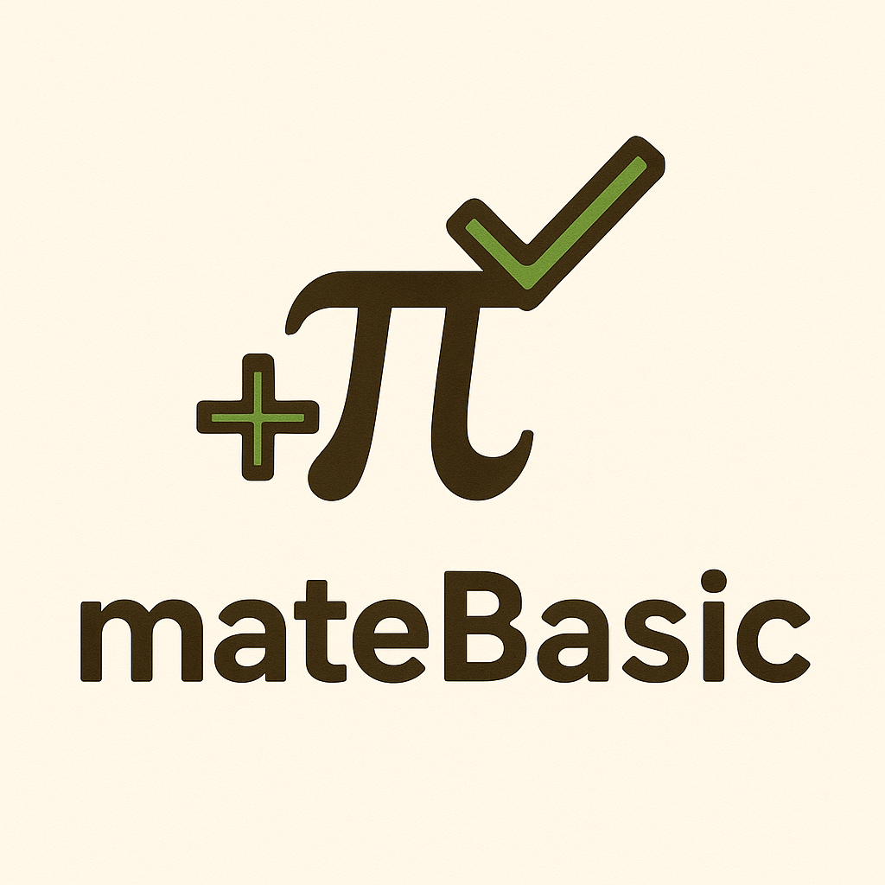

Bienvenidos aAprende paso a paso los fundamentos de las matemáticas |
|
| Inicio | Números | Suma | Resta | Multiplicación | División | Trigonometría | Geometría | Álgebra | Contacto | |
Cómo usar esta página
Consejos de estudio
|
¿De qué trata esta página?Esta página ha sido creada para apoyar el aprendizaje de las matemáticas básicas. Aquí encontrarás explicaciones claras, ejemplos sencillos y ejercicios prácticos que te ayudarán a comprender mejor cada tema. Temas que se abordan
Objetivo de la páginaBrindar un recurso educativo gratuito, práctico y sencillo para estudiantes, docentes y cualquier persona que desee mejorar sus conocimientos en matemáticas. Formulario de RegistroRegístrate para recibir materiales adicionales y actualizaciones: |
|
© 2025 Matemáticas Básicas | Proyecto educativo en HTML puro |
|